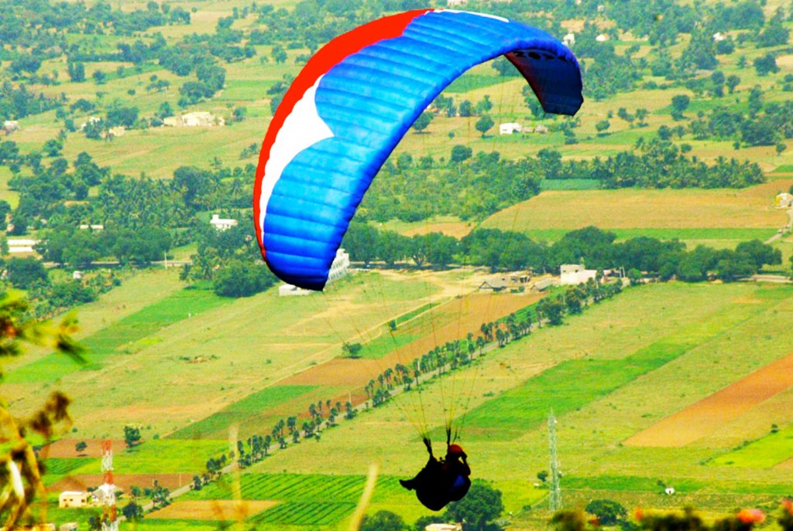

The Yelagiri hill station is not as developed as other hill stations in Tamil Nadu like Ooty or Kodaikanal. However, the district administration has now taken up the task of developing Yelagiri Hills into a tourist destination by promoting adventure sports such as paragliding and rock climbing.[4]
Yelagiri is one of the famous places for trekkers in India. The hill station is located at a height of 1410.6 meters above sea level. Yelagiri comprises 14 hamlets and a number of temples spread over several hills.
The highest point in Yelagiri is the Swamimalai Hill, standing tall at 4,338 ft; Swamimalai is a destination and viewpoint for trekkers. The hill provides a number of trekking trails through thick reserved forests. Mangalam, a small village, is at the base of this hill. There are other trekking options that include smaller peaks like Javadi Hills and Palamathi Hills.
Yelagiri Hills is home to hundreds of snakes.Yelagiri's climate is cool in the monsoon season. The daily weather is generally pleasant. In winter, there is much less rainfall than in summer.The Yelagiri Summer Festival
The famous Yelagiri Summer festival celebrated in May end is organised by the Tamil Nadu Tourism Development Board. Stalls from different departments, Flowers show, Boat house various cultural programs and Dog Show with a variety of dog breeds are conducted every year. People from all over the State and other parts of the country participate in this annual festival.

Chennai to Yelagiri Hills distance is 228 kms . Out of the 24 reviews shared by travellers:
4% prefer Bus
4% prefer Train
92% prefer Car or Cab respectively.
Yelagiri Hills does not have a train station, and the nearest station is Chittoor, at a distance of 86 kms from Yelagiri Hills. Ones you reach Vellore the joursey seems pretty simple for students as well. There are many ways to travel from Vellore to Yellagiri. Some of them are as follows:
TRAIN :
You can take any train that goes to Jolarpet.
There is Yelagiri Express that starts from Chennai to Jolarpet, you can board the train in Katpadi Railway Station. It's an hour travel.
There are many super fast trains you can get the tickets and board the general compartment.
After reaching Jolarpet there are regular buses which move towards Yelagiri at the Jolarpet bus stop which is just outside the station.
It will take another 30 min travel upwards.
You can even hire Autos and Cabs nearby the station if you don't mind the costs.
BUS:
You have to board any bus in the New Bus Stand that goes to Vaniyambadi, get down there and board a bus that goes to Yelagiri. There are frequent buses plying in this route.
Buses are not the fastest mode of travel to Yelagiri.
CABS:
As always you can hire any cab in Vellore. It's a 93 km drive. Average charge per KM would be Rs6/km. This might not be cost effective but certainly viable if your going with large number of persons or as a family.
Best option would be TRAIN!